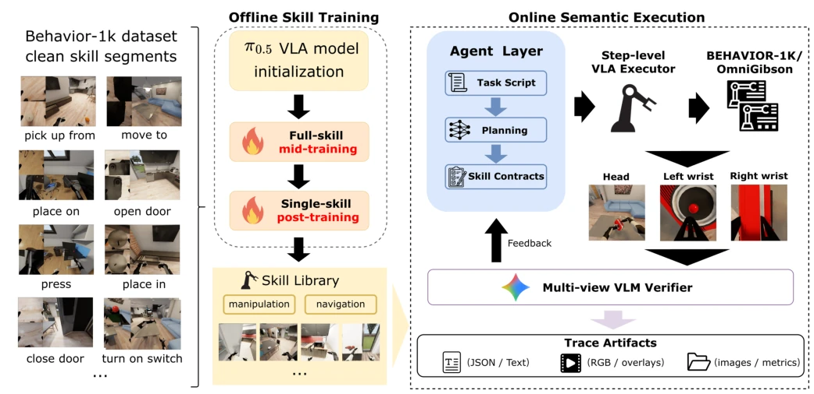
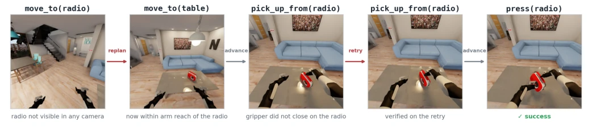

This paper is like a bucket of cold water poured on the hot trend of VLA models for long-horizon tasks. The authors did not boast about new SOTA, but honestly admitted: skills work under snapshots, but collapse when chained. The highlight lies in the diagnostic framework for "semantic handoff failure", turning the black-box VLA into an explainable pipeline, separating skill capability from compositional robustness through Agent orchestration. But there are also many drawbacks: BEHAVIOR-1K scale is too small, Verifier relying on VLM may introduce hallucinations, and the "readiness" check is currently hardcoded, not general enough. This is more like a "fault report" than a "solution", suitable for cooling down the team, reminding not to blindly pile data, but to focus on the robustness of state distribution.
Long-horizon household tasks require combining multiple language-conditioned skills, but skill boundaries are ambiguous. Existing VLA policies (such as RT-1 [4], RT-2 [5]) mostly focus on single skills or end-to-end, ignoring state distribution shifts between skills. Completion of one skill may leave the robot in a state where the next skill cannot start, i.e., "semantic handoff failure". This leads to high success rates for isolated skills in long-horizon execution, but combined task success rates are close to zero. Existing work lacks explicit verification of skill handoff states, leading to error accumulation. This paper aims to separate skill capability from compositional robustness through Agent orchestration, diagnose why skills under clean snapshots fail in chained states, and point out directions for improvement in data and verification capabilities.
Overall adopts an Agent-Orchestrated execution framework. In the offline phase, train a π0.5 VLA skill library based on cleaned BEHAVIOR-1K demonstrations, with staged fine-tuning. In the online phase, the Agent maintains task scripts and typed skill contracts (including budget, post-conditions). The core is the Plan-Act-Verify-Replan loop: the Agent calls skills, a multi-view VLM verifier checks if the current state satisfies post-conditions and next skill readiness (e.g., arm reachability). If verification fails, the Agent replans or retries, rather than proceeding directly. The skill library includes navigation, grasp, place, etc., and the verifier is based on head-mounted and wrist views. This framework treats skills as callable tools, provides runtime interfaces, records replayable trajectories for diagnosis, ensures every step has evidence support, thereby attributing failure to specific links.

Fig. 2: The semantic execution harness. Offline (left), cleaned BEHAVIOR-1K demonstrations initialize a π0.5 VLA backbone that full-skill mid-training and single-skill post-training specialize into a skill library spanning manipulation and navigation. Online (right), the agent layer maintains a task script, planning, and typed skill contracts, and dispatches step-level VLA skills in BEHAVIOR-1K/OmniGibson; a multi-view VLM verifier judges progress from head and wrist views and feeds its verdict back to the agent to advance, retry, or replan. Every rollout writes replayable trace artifacts (logs, videos, and evidence).
Evaluated on BEHAVIOR-1K, comparing isolated skill baseline with end-to-end combined rollout. Metrics include task progress score and failure attribution. Results show isolated skill success rate 77%-100%, but combined task progress is extremely low, proving state distribution shift is the bottleneck. Failure attributed to target localization, control execution, and next skill readiness. Ablation experiments show that tightening the navigation verifier to "arm reachable" instead of "visible" can significantly increase re-navigation attempts and recover some tasks (e.g., turning on radio). Verifier audited manually, failure decision reliability is high, but category labels still depend on the verifier, and task scripts have issues with unspecified object names, limiting generalization ability.

Fig. 1: Turning on the radio through skill composition. The agent issues a sequence of typed skill calls such as move_to, pick_up_from, and press, and a multi-view VLM verifier checks each handoff before the next skill runs. When a check fails the agent recovers within the same loop—re-planning to a new sub-goal after a navigation that does not reach the radio, and retrying after a grasp that does not close—advancing only once the post-condition holds, until the radio turns on. This plan-act-verify-replan loop is our agent harness; Fig. 2 gives the full architecture.